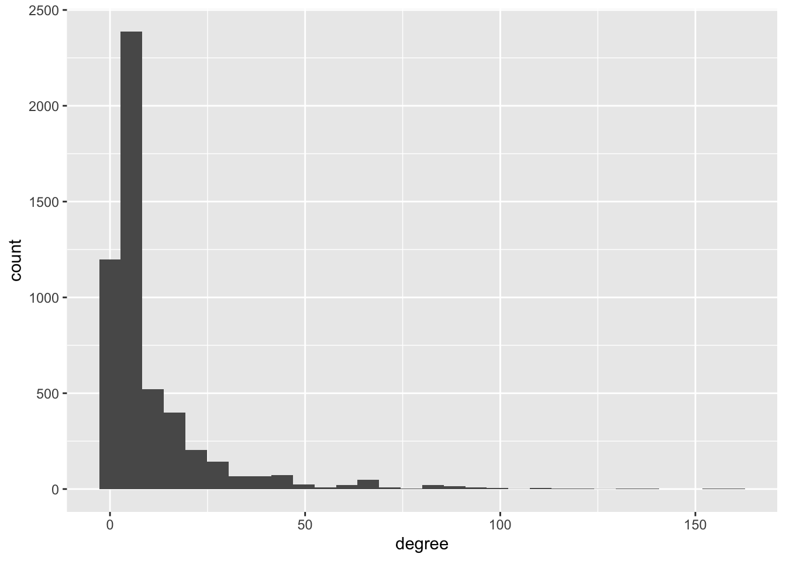
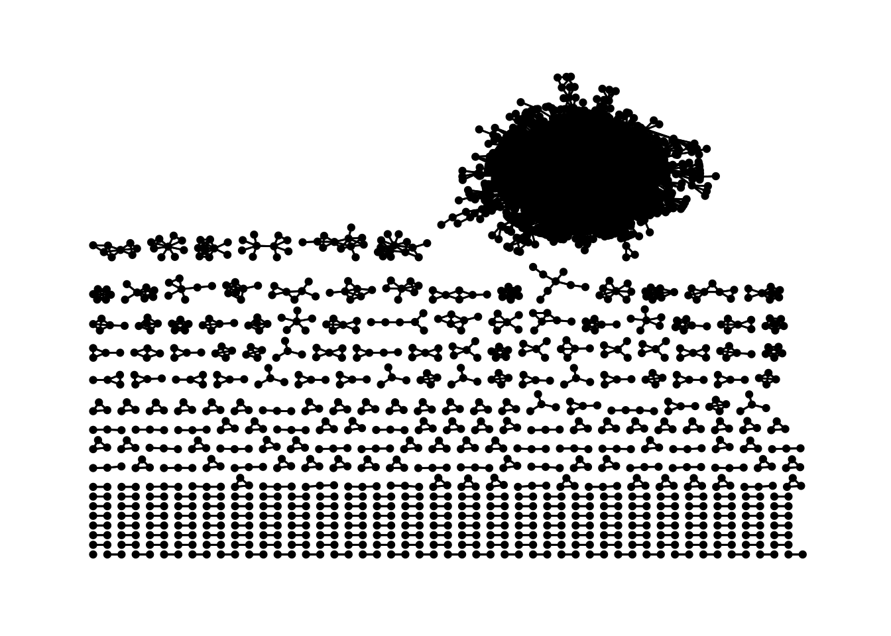
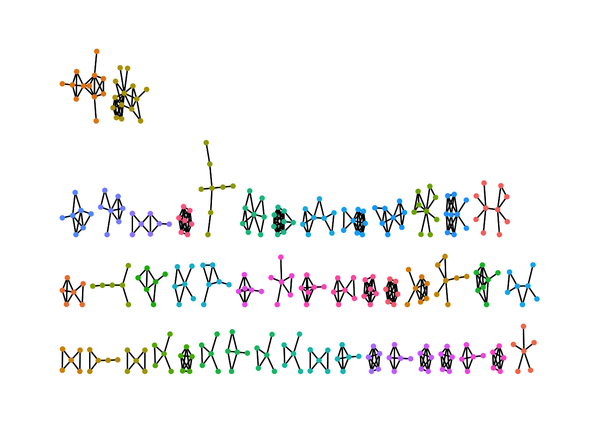
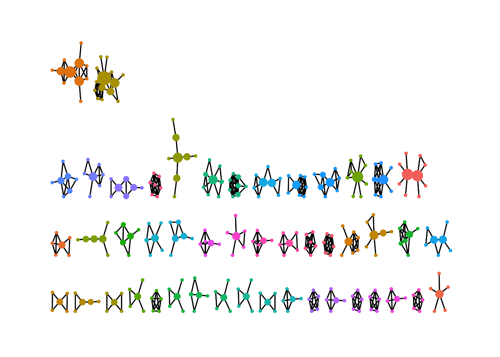
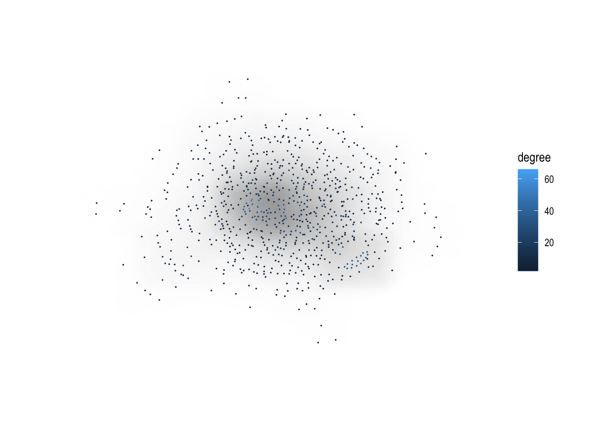

library(tidygraph)
library(tidyverse)
library(ggraph)
library(igraph)
library(janitor)Social network analysis
Guided practice
Dataset
We are going to use the General Relativity and Quantum Cosmology collaboration network from the SNAP team at Stanford.
- It is a collaboration network of Arxiv General Relativity category.
- There is an edge if authors coauthored at least one paper.
- The original dataset comes in a
.txtwith some descriptive metadata on top. We need to read the raw file and clean it a bit before we can start
raw_file <- read_delim('data/ca-GrQc.txt',delim = '\t',skip = 3) %>% clean_names(replace= c('#'=''))Rows: 28980 Columns: 2
── Column specification ────────────────────────────────────────────────────────
Delimiter: "\t"
dbl (2): # FromNodeId, ToNodeId
ℹ Use `spec()` to retrieve the full column specification for this data.
ℹ Specify the column types or set `show_col_types = FALSE` to quiet this message.raw_file# A tibble: 28,980 × 2
from_node_id to_node_id
<dbl> <dbl>
1 3466 937
2 3466 5233
3 3466 8579
4 3466 10310
5 3466 15931
6 3466 17038
7 3466 18720
8 3466 19607
9 10310 1854
10 10310 3466
# ℹ 28,970 more rowsigraph
igraph is large library for graph/network analysis. Not only is used in R, but also has versions for python and C/C++.
The network will not be stored as a dataframe, matrix or list. igraph builds a new type of object.
This package uses a specific vocabulary, more related with the math/graph community. So a network is a graph, nodes are called vertex and links are edges.
Building the network
To parse the network with igraph we use the function graph_from_data_frame. We also need to specify if the network is directed or not. As this is a co-authorship network, the relation is symmetrical (undirected) among authors.
g <- graph_from_data_frame(raw_file, directed=FALSE)If we want to see the main features of this network, we simply call the object.
gIGRAPH 9b9493d UN-- 5242 28980 --
+ attr: name (v/c)
+ edges from 9b9493d (vertex names):
[1] 3466 --937 3466 --5233 3466 --8579 3466 --10310 3466 --15931
[6] 3466 --17038 3466 --18720 3466 --19607 10310--1854 3466 --10310
[11] 10310--4583 10310--5233 10310--9572 10310--10841 10310--13056
[16] 10310--14982 10310--16310 10310--19640 10310--23855 10310--24372
[21] 10310--24814 5052 --899 5052 --1796 5052 --2287 5052 --3096
[26] 5052 --3386 5052 --4472 5052 --5346 5052 --5740 5052 --6094
[31] 5052 --6376 5052 --9124 5052 --10235 5052 --10427 5052 --10597
[36] 5052 --15159 5052 --16148 5052 --16741 5052 --18235 5052 --18549
+ ... omitted several edgesWe can see that the network
ghas 5242 nodes and 28980 links.The nodes (also called vertex) have one attribute: the name. This is the id of each author.
Both nodes and edges can have any number of attributes. If the network is weighted, then the edges should have an attribute to represent the strength of the connection.
We can use the function
Vto access nodes, andEto access edges.If we want to access the attributes of the nodes, we use the
$with the name of the attribute.
V(g)$name %>% sample(10) [1] "17755" "231" "21995" "19014" "7071" "1672" "22766" "2243" "4211"
[10] "23623"E(g) %>% sample(10)+ 10/28980 edges from 9b9493d (vertex names):
[1] 9785 --20774 5407 --9099 25034--13199 19974--23770 8879 --22887
[6] 24159--717 11609--357 8471 --13483 13749--13355 24924--26170Node level metrics
igraph has a lot of metrics implemented, and it is pretty straight-forward to use.
- For example, if we want to get the degree of each node, we can use the function
degreewhich returns a named vector with the degree of each node.
degree(g) %>% sample(10)21613 2475 20668 24708 12689 11528 20618 20059 17778 15250
6 6 2 6 6 4 6 14 10 4 - We can do the same for
betweennessandcloseness.eigen_centralityreturns a list with some other parameters, and the centrality of each node under thevectorelement of the list
betweenness(g) %>% sample(10) 13847 20517 18867 23970 6823 1172 11964
16177.4106 466.2658 0.0000 0.0000 49077.2513 24918.5435 29620.5864
9312 14131 18772
2077.5000 0.0000 0.0000 closeness(g) %>% sample(10) 2762 2654 9184 8868 19090 17131
1.000000e+00 5.675369e-05 5.040577e-05 3.723424e-05 4.508363e-05 4.441286e-05
10268 18784 14864 12070
4.435770e-05 3.573088e-05 4.767353e-05 4.553941e-05 eigen_centrality(g)$vector %>% sample(10) 25615 4135 24504 2749 8441 2917
2.997766e-06 6.841747e-06 6.270955e-19 7.939951e-19 2.417558e-05 1.892610e-09
15316 12066 22254 373
2.577182e-04 1.434977e-06 1.137208e-09 6.873164e-19 - If we combine all these, we can build a dataframe with the different centrality measures
centrality_metrics <- tibble(node= V(g)$name,degree=degree(g), betweenness= betweenness(g), closeness=closeness(g), eigen_centrality= eigen_centrality(g)$vector)
centrality_metrics %>%
arrange(-degree)# A tibble: 5,242 × 5
node degree betweenness closeness eigen_centrality
<chr> <dbl> <dbl> <dbl> <dbl>
1 21012 162 159961. 0.0000566 1
2 21281 158 132408. 0.0000542 0.951
3 22691 154 134247. 0.0000560 0.945
4 12365 154 154195. 0.0000562 0.984
5 6610 136 175302. 0.0000552 0.943
6 9785 136 99625. 0.0000540 0.970
7 21508 134 44325. 0.0000538 0.972
8 17655 132 247146. 0.0000573 0.953
9 2741 130 80549. 0.0000557 0.987
10 19423 126 97418. 0.0000540 0.950
# ℹ 5,232 more rows- We can see that the author
21012has 162 co-authors and has the highest eigen-centrality (1). - We can also make a first visualization of the degree distribution:
centrality_metrics %>%
ggplot(aes(x=degree))+
geom_histogram()`stat_bin()` using `bins = 30`. Pick better value with `binwidth`.
Network level metrics
- Density: we can check the ratio between the number of edges and the number of possible edges with
edge_density.
igraph::edge_density(g)[1] 0.002109683- Is our network connected?
is_connected(g)[1] FALSENo! this means that there are some authors that are not connected in any path with some others. Let’s see the components of the network:
- How many distinct components are?
igraph::count_components(g)[1] 355- The function
componentsgives themembershipof all authors to the different components. - It also tell us the number of components and the size of each one.
components(g)$csize [1] 4158 2 3 2 2 2 2 2 10 2 2 2 4 3 3
[16] 2 6 4 3 3 2 3 2 2 3 2 2 6 3 4
[31] 12 2 2 7 3 2 5 7 2 2 4 2 3 5 3
[46] 2 14 2 2 5 2 2 4 2 3 2 2 3 8 2
[61] 6 9 5 3 3 2 4 5 4 4 6 3 3 4 3
[76] 2 2 7 5 5 3 3 3 2 2 5 8 3 8 4
[91] 2 3 3 2 3 3 4 5 5 2 3 2 2 3 3
[106] 3 2 5 3 2 2 2 3 2 6 3 3 2 2 3
[121] 6 2 2 3 2 8 3 3 2 2 4 2 3 2 2
[136] 2 3 2 7 3 2 2 2 2 3 3 2 2 2 3
[151] 2 2 2 3 2 2 2 3 3 3 4 2 2 4 2
[166] 3 3 3 2 4 4 4 3 2 4 3 2 2 2 8
[181] 8 2 2 4 9 2 3 3 3 2 4 3 2 3 3
[196] 2 2 2 2 2 2 2 3 3 7 2 7 2 2 2
[211] 2 3 7 3 3 2 2 5 3 4 2 3 3 4 2
[226] 3 5 2 3 2 5 3 5 4 2 2 2 2 6 3
[241] 5 4 3 3 6 2 2 5 2 2 6 2 3 2 3
[256] 2 4 2 2 2 2 2 2 2 2 4 3 2 4 2
[271] 2 2 3 3 2 2 3 2 2 3 2 3 4 2 2
[286] 6 3 2 2 3 2 2 2 2 2 3 4 2 2 2
[301] 2 3 2 2 2 2 2 1 6 2 2 2 2 2 3
[316] 2 3 2 7 2 3 3 3 3 3 2 3 2 3 2
[331] 2 2 3 3 2 2 2 3 2 2 2 2 4 2 2
[346] 2 2 6 2 2 2 2 2 2 3- There is one huge component of 4158 authors, and all the other components are much smaller.
Graph decomposition
Sometimes all the relevant analysis is on the giant component of the network, as most of the metrics don’t make sense between unconnected components. So it makes sense to only keep the biggest one. For this we can use the function decompose, that builds the sub-graphs of connected components. And we keep the first element of the list, that contains the largest component.
gg <- decompose(g)[[1]]- Which is the largest distance between two co-authors? we can use the function
diameter.
diameter(gg)[1] 17- And what about the 6 degrees of separation?
mean_distance(gg)[1] 6.04938It works pretty well for this network! this means that if an author wants to reach another only through his colleagues, it takes on average 6 people.
- For the average degree we can simply average the previous result.
centrality_metrics$degree %>% mean()[1] 11.05685An author has 11 co-authors on average.
- The clustering coefficient is also called transitivity, and that’s how we find it in igraph.
transitivity(gg)[1] 0.6288945There is a lot of clustering among co-authors! if an author collaborated with 2 other, there is a high chance that those authors also collaborated among them. This makes sense on collaboration networks because people work on teams/labs, and also because the relation co-authorship is based on papers that have more than 2 authors, so the same event (a paper) creates links among all co-authors.
Network visualization
igraph has its own implementation of network visualization using the function plot. But in this note we will use the library ggraph that makes a ggplot-friendly implementation of network visualizations.
Layouts
Networks are hard to visualize because we need to show points (nodes) in a space, but there are no natural x-y dimensions to sort them. The layout in which we sort nodes is defined by a specific algorithm, and there are many!
We can see all the different components sorted by size with the layout = 'stress'.
ggraph(g, layout = 'stress')+
geom_edge_link()+
geom_node_point() +
theme_graph()Warning: Using the `size` aesthetic in this geom was deprecated in ggplot2 3.4.0.
ℹ Please use `linewidth` in the `default_aes` field and elsewhere instead.
Let’s now focus on the middle-size components that are easier to visualize.
Using the components function we can build a dataset with the membership of each node, and the size of its component. This is easy to filter, so we can remove the giant component and the smallest components.
comp <- tibble(name = V(g)$name, membership= components(g)$membership) %>%
left_join(tibble(size=components(g)$csize) %>%
mutate(membership=row_number()),by='membership') %>%
filter(membership!=1,size>4)With the induced_subgraph function we can filter the network by id, using the comp$name.
small_g <- induced_subgraph(g, comp$name)We can add the membership of the nodes as an attribute.
V(small_g)$membership <- components(small_g)$membershipggraph(small_g, layout = 'stress')+
geom_edge_link()+
geom_node_point(aes(color=factor(membership)))+
theme_graph()+
theme(legend.position = 'none')
We can also add centrality measures of nodes and visualize them.
V(small_g)$degree <- degree(small_g)
V(small_g)$closeness <- closeness(small_g)
V(small_g)$betweenness <- betweenness(small_g)
ggraph(small_g, layout = 'stress')+
geom_edge_link()+
geom_node_point(aes(color=factor(membership), size=betweenness))+
theme_graph()+
theme(legend.position = 'none')
If we want to look at the giant component, the size makes it hard to see patterns. We can represent the edges as a density over the space instead of showing all of them. Also, it’s a good idea to make points smaller. Still, this is a visualization with a lot of information (4158 data points!) so it can take some time to render.
#for simplicity we select only the first 1000 nodes and their neighbors
gg <- decompose(induced_subgraph(g, c(1:1000, neighbors(gg,1:1000))))[[1]]
V(gg)$degree <- degree(gg)
gg %>%
ggraph(., layout = 'stress')+
geom_edge_density()+
geom_node_point(size=0.01, aes(color=degree))+
theme_graph()Warning: The following aesthetics were dropped during statistical transformation: xend
and yend.
ℹ This can happen when ggplot fails to infer the correct grouping structure in
the data.
ℹ Did you forget to specify a `group` aesthetic or to convert a numerical
variable into a factor?
We can see a center-periphery structure among the co-authors network.